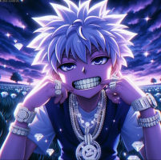
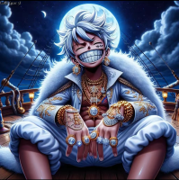

Chopper (but with drip)

Killua (but with drip)

Luffy (but with drip)

Natsu (but with drip)

Characters in anime and manga for the most part don't change their clothes throughout a season, or even a series. My solution to this problem would be to simply drip them out to by adding more flare to their seasonal outfits